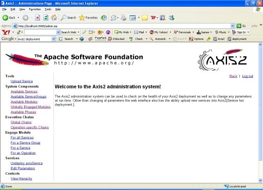
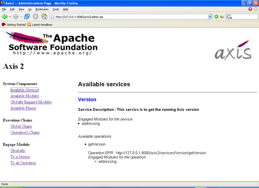
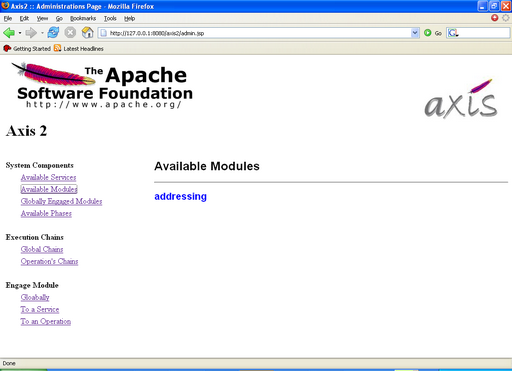
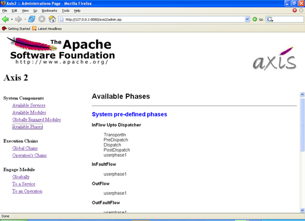
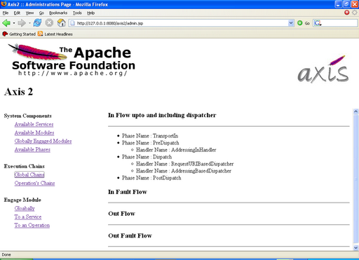
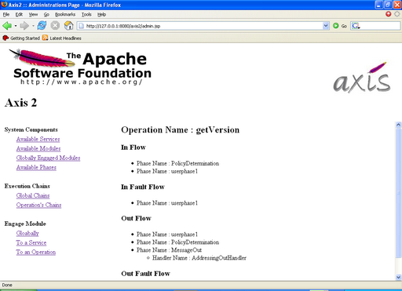
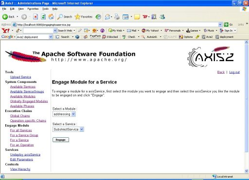
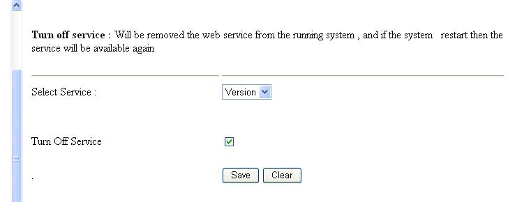
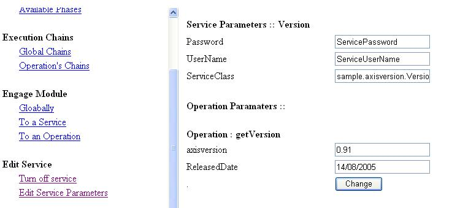

Axis2 web administration module provides a way to configure axis2 dynamically. Its important to note that this dynamic configuration will NOT be persistent, i.e. if the servlet container is restarted then all the dynamic configuration changes will be lost.
From axis2 index page you can go to administration page by following Axis2 Administration link, then logging page will appear asking for a user name and a password , the default username is 'admin' (without quotes) and default password is 'axis2' (without quotes). You can change those two values by changing following two parameters in server.xml as required.

If the login succeed you will be see as shown below. This is where you can view the configuration and the state of the running system and dynamically configure it.

The functionality of the 'List Available Services' option is almost same as the functionality of the axis to main page where it displays the list of deployed services. But as an additional feature, if there are any modules engaged globally, to services or to operations those details will be displayed here.

To view the available modules in the "repository/modules" you just have to click the 'Available Modules' then it will show you all the available modules in the system and those modules can be engaged dynamically.

From the globally engaged modules you can see the globally engaged modules if any , if a module was engaged globally then the handlers that belong to that module will be executed irrespective of the service. The 'Globally Engaged Modules' option lists the above list of modules.
In axis2 there are two levels of phases:
The main difference between those two levels of phases is that, in the case of system predefined phases, the phases will be invoked irrespective of the irrespective of the services. When the dispatcher finds the operation then user defined phase list will be invoked. It should be noted that the module developers and service writers are really required to have a good understanding of phases and phase ordering.
The most interesting feature of axis2 web admin module is that it provide a very basic way of viewing the global phase list and handlers inside the phases depending on both phase and handler orders. This kind of information is extremely useful in debugging the system, because there is no way to list out the handlers in the global chains except this. And if you engage a new module the new handlers will be added to the global chains and those will be displayed in this page.

The 'Operation Specific Chains' can be used to view the handlers corresponding to a given service in the same order as there in the real execution chain.

Modules can be engaged either globally, to a service or to an operation depending on the module implementation. If the module was designed to engage the handlers globally then handlers in the module can be included in any phase in the system. It can be either system predefined or user defined phase.
In there other hand if the module was implemented in such a way that is going to be deployed to a service or to an operation then the module canNOT be included in any of system predefined phases. So that it can only be included in user defined phases.
Immediately after engaging the module you can see the status of the engagement , indicating whether it is engaged properly or not.

This functionality provide a way to remove unnecessary services from the running system, but the removal is transient meaning if you restart the system the service will be available.

This functionality provide a way to change parameters in a service or its operations, and those changes will be transient too.
